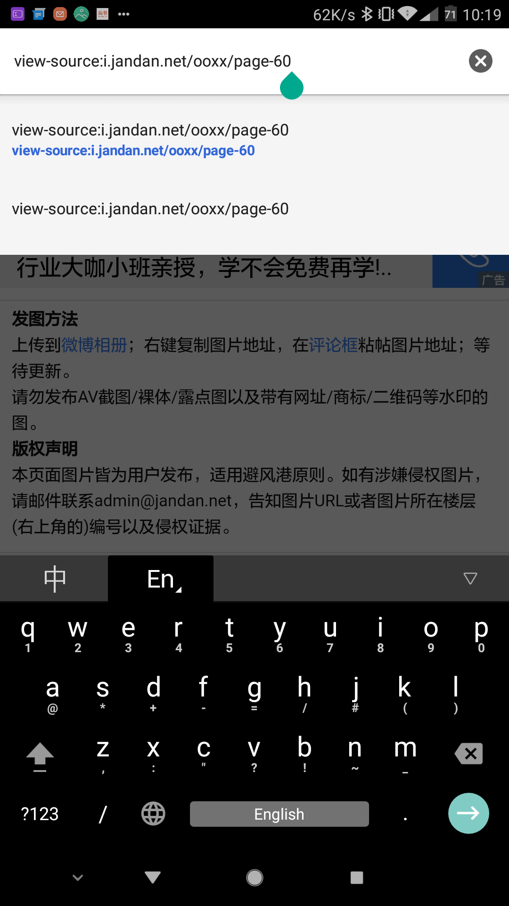
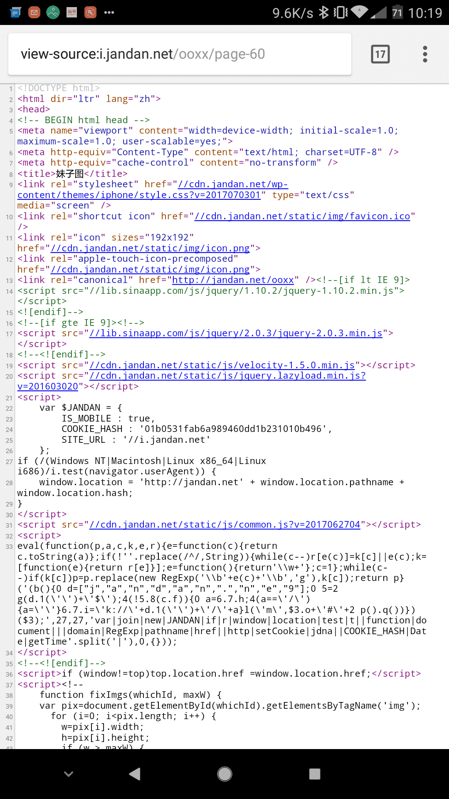
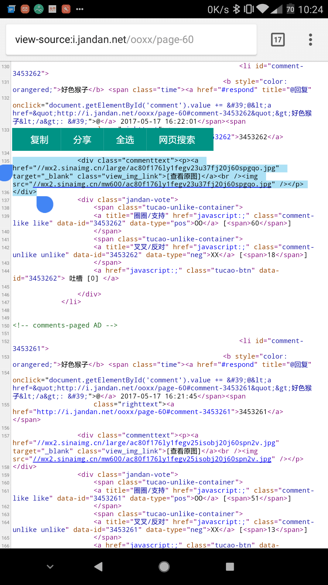
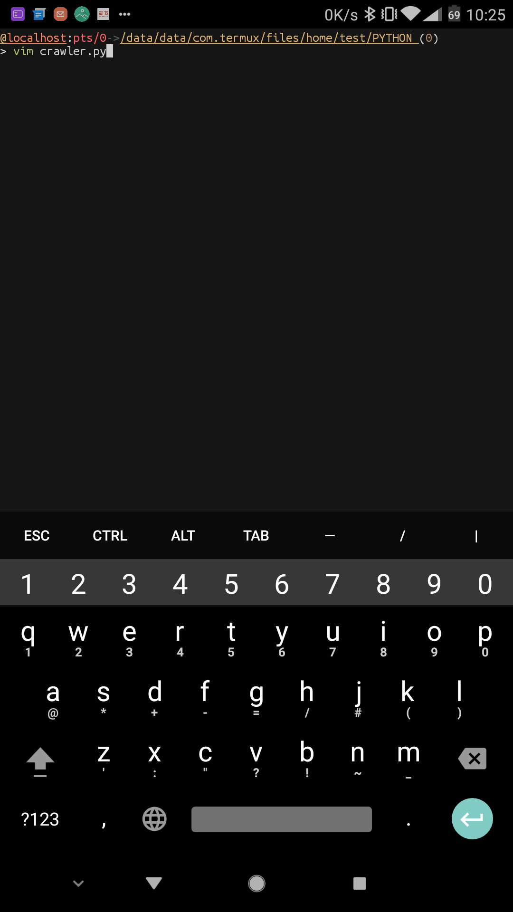
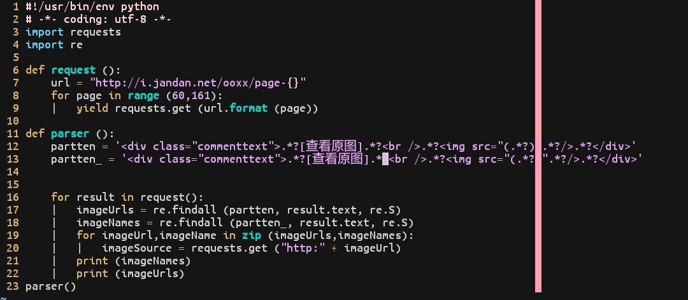
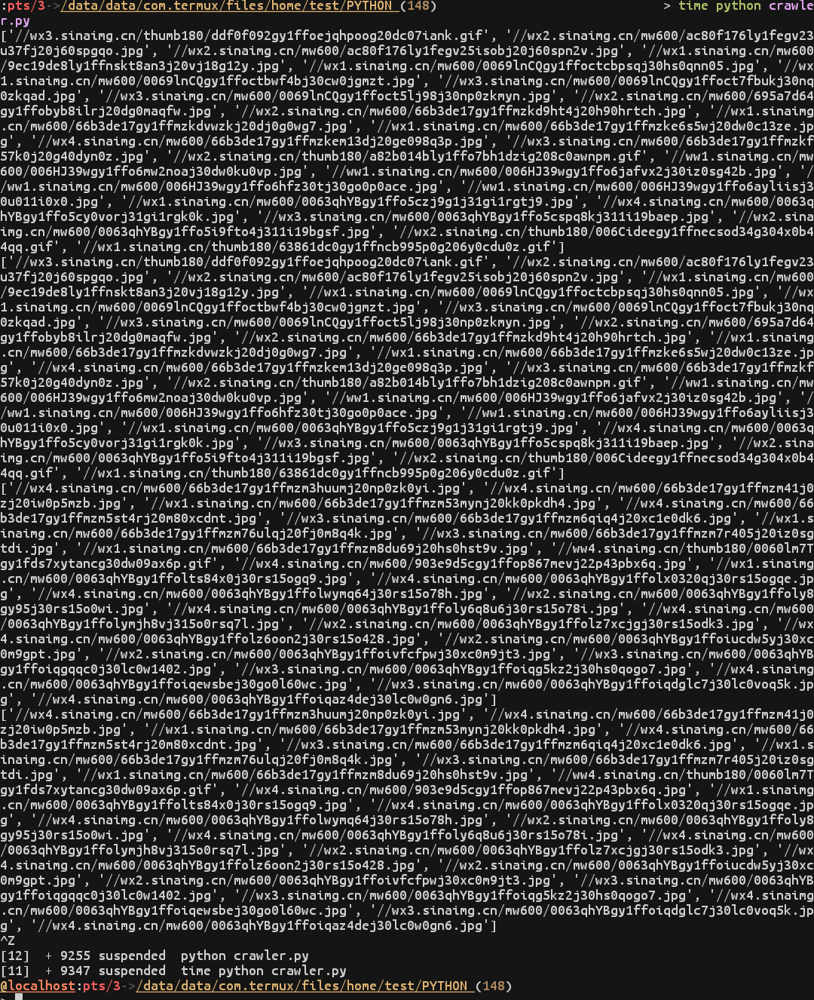
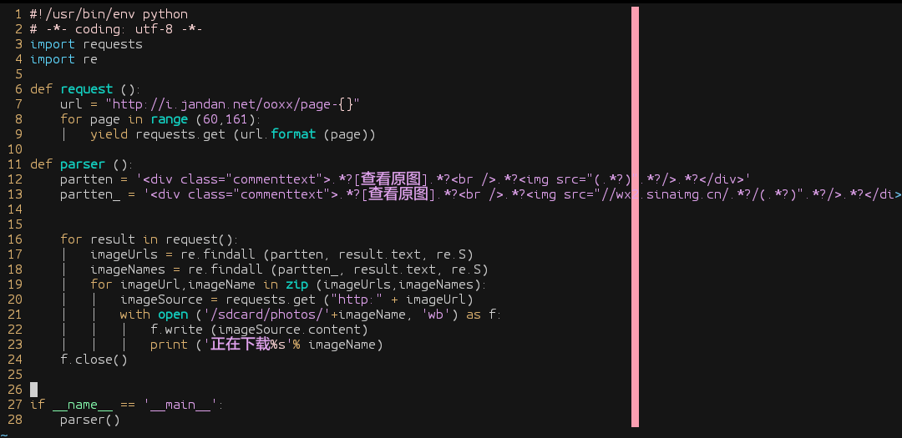
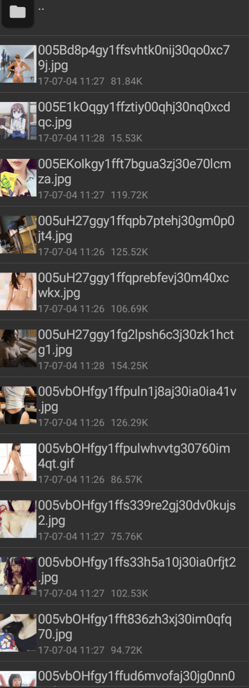

前言
首先我个人认为一个小爬虫的步骤很简单，无非就是“找网站-分析网页源码-请求-分析-匹配-输出”，就这样，这是我个人理解
那么手机爬虫也就是和PC端一毛一样，除了工具以外
那么开始吧～
正文
我这里推荐三个手机app：
packet capture（抓包工具，网上有汉化版）
termux（手机终端）
pydroid（网络上比较少，但是可以到Google play下载，只支持Python2，我这里有自己汉化了的，有需求的可以找我）
这篇文章只用两个软件：termux和chrome浏览器即可
我们要爬取的网站是著名的老司机网站：i.jandan.net，我们只抓取100页的图片（60-160）
网址在这：jandan，但是我们还不知道它网页的构造，在浏览器的网址栏上加上“view-source”，加在网址的最前面，也就成了这样

OK，现在该网页的源码已经呈现在我们眼前了，可能看着有点费劲，但还好有高亮，不算太坑爹

一般情况下：我们找到图片的链接关键字，比如href、jpg、png之类的
但是这，我们只需要找“查看原图”这四个字就可以了，找到之后，我们可以看到它的一个图片都是用一个div给包裹着，每个都是

这个就好办了，可以开始写代码来
那么开始把，打开termux，新建一个crawler.py文件，我这里是这个，你们随意

然后导入我们那需要的包
1
2
| import requests
import re
|
只需要这两个包即可
然后分享一下我的代码：
1
2
3
4
5
6
7
8
9
10
11
12
13
14
15
16
17
18
19
20
21
22
23
24
25
|
import requests
import re
def request():
url = "http://i.jandan.net/ooxx/page-{}"
for page in range(60, 161):
yield requests.get(url.format(page))
def parser():
pattern = '<div class="commenttext">.*?[查看原图].*?<br />.*?<img src="(.*?)".*?/>.*?</div>'
pattern_ = '<div class="commenttext">.*?[查看原图].*?<br />.*?<img src="(.*?)".*?/>.*?</div>'
for response in request():
image_urls = re.findall(pattern, response.text, re.S)
image_names = re.findall(pattern_, response.text, re.S)
for url, name in zip(image_urls, image_names):
source = requests.get(f"http:{url}")
print(image_names)
print(image_urls)
if __name__ == "__main__":
parser()
|


接下来，我们就只需要下载就可以完成了，看代码吧：
1
2
3
4
5
6
7
8
9
10
11
12
13
14
15
16
17
18
19
20
21
22
23
24
25
26
|
import requests
import re
def request():
url = "http://i.jandan.net/ooxx/page-{}"
for page in range(60, 161):
yield requests.get(url.format(page))
def parser():
pattern = '<div class="commenttext">.*?[查看原图].*?<br />.*?<img src="(.*?)".*?/>.*?</div>'
pattern_ = '<div class="commenttext">.*?[查看原图].*?<br />.*?<img src="//wx.sinaimg.cn/.*?/(.*?)".*?/>.*?</div>'
for response in request():
image_urls = re.findall(pattern, response.text, re.S)
image_names = re.findall(pattern_, response.text, re.S)
for url, name in zip(image_urls, image_names):
source = requests.get(f"http:{url}")
with open(f'/sdcard/photos/{name}', 'wb') as f:
f.write(source.content)
print(f'正在下载{name}')
if __name__ == "__main__":
parser()
|

下载过程：

完成：

最后
简单，代码量很少，有用的代码最多20行
感谢观看，有错的地方别喷，指出来，我学习。